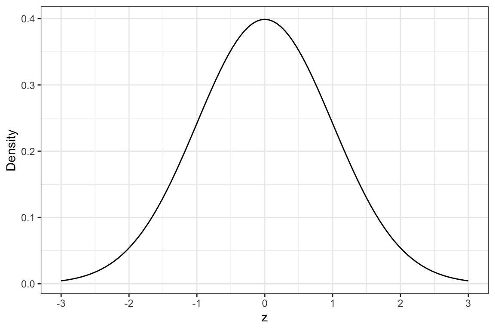
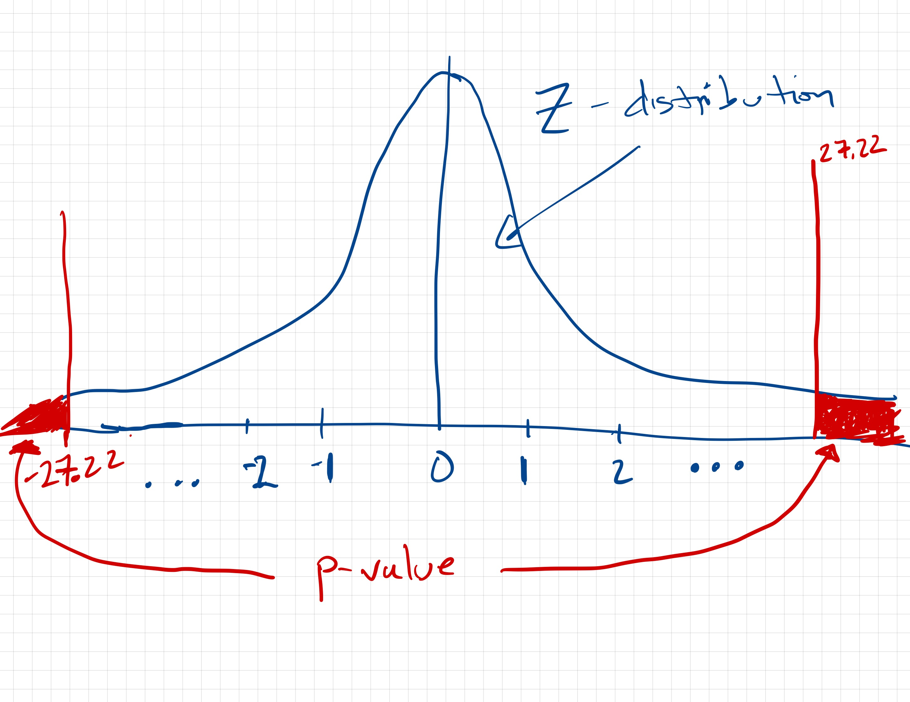
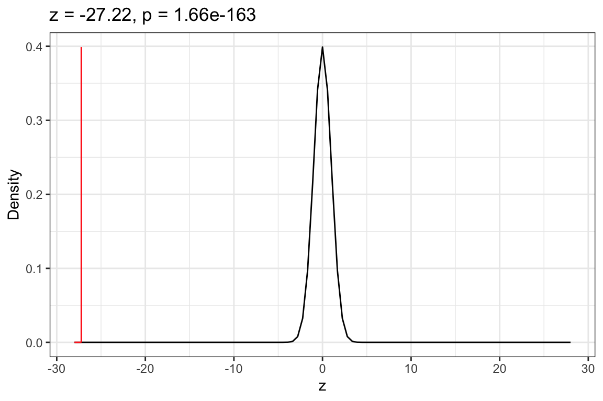
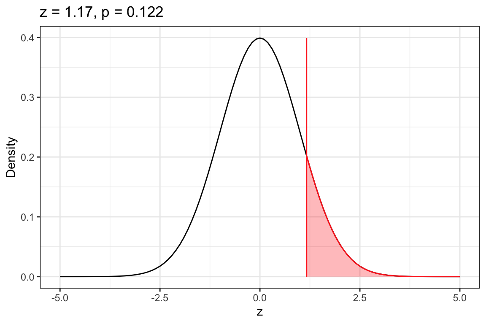

12One-Sample z-Test: Evaluating Proportions Against a Standard
In this chapter you will learn about how to use a one-sample z-test to statistically compare a proportion computed in a sample of data to a standard by accounting for the sampling uncertainty. You will also learn about the assumptions that we need to make in order for the results of a one-sample z-test to be statistically valid.
12.1 Case Study: Lead Levels in Minnesota Children
Lead exposure has been shown to have deleterious effects on peoples’ health and well-being, especially children. The Center for Disease Control collects blood lead surveillance data from all 50 states in the United States. In 2012, the proportion of children tested under 6 years of age that had lead levels in their blood above the Minnesota Department of Health (MDH) reference level for high blood lead levels (5µg/dL) was .029. The data in mn-lead.csv contains the measured lead levels in the blood for all Minnesota children tested under 6 years of age in 2018. There is also an attribute (ebll) that indicates whether the lead level indicates an elevated blood lead level according to MDH (i.e., is blood lead level above 5 µg/dL).
# A tibble: 91,706 × 2
lead_level ebll
<dbl> <chr>
1 2.39 No
2 2.42 No
3 3.73 No
4 3.53 No
5 2.6 No
6 1.8 No
7 4.46 No
8 3.77 No
9 2.03 No
10 3.73 No
# ℹ 91,696 more rows
One question health officials might ask is: Is the proportion of all Minnesota children under 6 years of age who are above the MDH reference level in 2018 different than the proportion in 2012? That is, they might wish to examine the following hypotheses:
\[
\begin{split}
H_0: \pi_{\text{Above MDH}} = .029 \\[1ex]
H_A: \pi_{\text{Above MDH}} \neq .029
\end{split}
\] where \(\pi_{\text{Above MDH}}\) (the Greek letter equivalent of “p”) is the proportion of all Minnesota children under 6 years of age who are above the MDH reference level. (Note that it is convention to indicate the group you are hypothesizing the proportion for in the subscript of \(\pi\).) To answer this question, we can compute the proportion of Minnesota children under 6 years of age (who were tested) who have blood lead levels above the MDH reference level in 2018. We can then carry out a one-sample z-test to see if any differences between the 2012 and 2018 proportions are just due to sampling error.
12.1.1 Summarizing the Sample Data
We will start the analysis by summarizing the ebll attribute to determine the proportion of Minnesota children in 2018 under 6 years of age (who were tested) who have above blood lead levels above the MDH reference level.
# Syntax to compute the proportion for each category in the control attributedf_stats(~ebll, data = mn_lead, props)
These summaries indicates that in 2018, the proportion of Minnesota children under 6 years of age (who were tested) who have above blood lead levels above the MDH reference level was .0139. The notation we use to denote a sample proportion is \(\hat{p}\).
\[
\hat{p} = .0139
\]
This is a lower proportion than was found in the 2012 data by .0151. The next question we would want to tackle is whether this difference is more than we expect because of sampling error. To determine this, we need to carry out a hypothesis test.
12.1.2 Testing Proportions Using the One-Sample z-Test
The hypothesis test we use to compare a sample against a known standard is the one-sample z-test. The process we use is very similar to that for the one-sample t-test, which was:
Use the sample proportion to compute a t-value;
Locate the observed z-value in the t-distribution; and
Determine the p-value by computing the area under the curve in the t-distribution that is at least as extreme as the observed t-value based on the alternative hypothesis.
For the one-sample z-test, the process is:
Use the sample proportion to compute a z-value;
Locate the observed z-value in the z-distribution; and
Determine the p-value by computing the area under the curve in the z-distribution that is at least as extreme as the observed z-value based on the alternative hypothesis.
To compute the z-value, we use:
\[
z = \frac{\hat{p} - \pi}{SE_{\hat{p}}}
\]
where \(\hat{p}\) is the sample proportion, \(\pi\) is the value hypothesized in the null hypothesis, and \(SE_{\hat{p}}\) is the standard error for the proportion. This SE is computed as:
\[
SE_{\hat{p}} = \sqrt{\frac{\pi(1 - \pi)}{n}}
\] where again, \(\pi\) is the hypothesized proportion in the null hypothesis and \(n\) is the sample size. In our example, the z-value is:
Similar to a t-value, a z-value indicates how many standard errors the sample mean is from the hypothesized value, In our case, the sample proportion we computed in the data of .0139 is 27.22 standard errors below the hypothesized value of .029. We can evaluate this in the z-distribution.
Unlike the t-distribution which is different depending on the df, there is only one z-distribution. The z-distribution is a normal distribution that has a mean of 0 and a standard deviation of 1. The z-distribution is shown in Figure 15.4.
Figure 12.1: Density plot of the z-distribution.

To find the p-value associated with the alternative hypothesis that \(\pi\neq.029\), we will include the observed z-values of \(-27.22\) and 27.22 into the z-distribution and shade the area under the curve that is more extreme than these values—less than the observed z-value of -27.22 and more than the extreme value of 27.22. A sketch of this is shown in Figure 12.2.
Figure 12.2: Sketch of the density plot of the z-distribution with the observed z-value of -27.22 (and 27.22) also included. The shaded area to the left of -27.22 and right of 27.22 constitute the p-value associate with the null hypothesis that the population proportion is different than .029.

The p-value here is going to be quite small since the combined area under the curve to the left of \(-27.22\) and right of 27.22 is quite small relative to the area under the whole curve.
In practice, we will use the prop_test() function from the {mosaic} package to carry out the one-sample z-test and compute the p-value. This function takes:
A formula using the tilde (~), similar to the gf_ and df_stats functions, that specifies the attribute to carry out the one-sample z-test on. We also need to specify the level of the attribute we want to compute the sample proportion for using == and then giving the exact name for that level inside quotation marks.
data= specifying the name of the data object,
p= indicating the value of the proportion in the null hypothesis,
alternative= indicating one of three potential alternative hypotheses: "less", "greater", or "two.sided" (not equal). Note that these need to be enclosed in quotation marks. Again, in practice, we only use the two-sided alternative hypothesis.
correct=FALSE indicating that we want to do the calculation of the z-value without a correction for continuity which will mimic the formula.
To carry out the one-sample z-test, we will use the following syntax. Note that in the formula we also indicate that we want to compute the sample proportion for the "Yes" values. We assign the results of this z-test to an object (in this case, I called it my_z). Then we can use the z_results() and plot_z_dist() functions (both from the {educate} package) to show the results of the z-test and plot the z-distribution along with the observed z-value and shaded area associated with the p-value.
# One-sample z-testmy_z <-prop_test(~ebll =="Yes", data = mn_lead, p = .029, alternative ="two.sided",correct =FALSE )# Plot z-distribution, observed z-value and shaded p-valueplot_z_dist(my_z)# Show z-test resultsz_results(my_z)
--------------------------------------------------
1-sample proportions test without continuity correction
--------------------------------------------------
H[0]: pi = 0.029
H[A]: pi ≠ 0.029
z = -27.22473
p = 3.311047e-163
--------------------------------------------------
Figure 12.3: Density plot of the z-distribution with the observed z-value of -27.22 (and 27.22) also included. The shaded area to the left of -27.22 and right of 27.22 constitute the p-value associate with the null hypothesis that the population proportion is different than .029.

Based on the p-value, and using an \(\alpha\)-value of .05, we would reject the null hypothesis. This suggests it is likely that the proportion of all Minnesota children under 6 years of age who are above the MDH reference level in 2018 is different than the proportion in 2012. In this interpretation we call attention to the words “it is likely” to remind you that it is possible we may have made a Type I error in which case the proportion of all Minnesota children under 6 years of age who are above the MDH reference level in 2018 is NOT lower than the proportion in 2012.
12.2 Assumptions for the One-Sample z-Test
Whether or not the p-value we obtain from the z-test is accurate depends on the following set of statistical assumptions:
The values in the population follow a binomial distribution. This is true so long as there are only two values the attribute can take on (e.g., “Yes” or “No”).
The values in the population are independent from each other.
The quantities \(n(\hat{p})\) and \(n(1-\hat{p})\) are both greater than 10, where n is the sample size and \(\hat{p}\) is the sample proportion value.
To evaluate the first assumption that the distribution of values in the population follow a binomial distribution, we only need to confirm that the population only has two values. In our example, this is true; the only two values a case can have is “Yes” (blood lead level is above the MDH reference) or “No” (blood lead level is not above the MDH reference).
We will evaluate the independence assumption the same way we did for the one-sample t-test, by referring to the study design. In our example, the cases in the data do not constitute a random sample of all Minnesota children. Does knowing that one Minnesota child’s blood lead level is above (or below) the MDH reference level give us any information about whether any other Minnesota child’s blood lead level is above (or below) the MDH reference level? Without additional data it is difficult to know, so we could argue that the independence assumption seems tenable.1
Lastly we compute the quantities in the third assumption and check that they are both greater than 10.
The Rotten Tomatoes website includes both audiences’ and critics’ ratings for different movies. The ratings are then classified into one of two categories: “Fresh” (which indicates a positive review) or “Rotten” (which indicates a negative review). The data in fastx-reviews.csv includes the critic ratings (as of May 23, 2023) for the film Fast X (the 10th installment of the Fast & the Furious franchise). You will use the data in the fresh_rotten attribute to evaluate whether the proportion of all critics’ “Fresh” reviews is different than .50. Mathematically the hypotheses you will evaluate are:
The sample proportion of “Fresh” reviews is 0.538.
Which hypothesis the null or alternative, does the sample evidence support? Explain
The sample evidence supports the alternative hypothesis since \(\hat{p}=.538\) is different than the hypothesized value of 0.5.
Compute the observed z-value using the formula given earlier in the chapter. Also interpret what this value tells you about how far the sample proportion is from the hypothesized value.
The observed z-value tells us that the sample proportion is 1.17 standard errors higher than the hypothesized value of 0.50.
Carry out a one-sample z-test to evaluate whether the sample evidence is only due to sampling error. Report the pertinent results from this test, and use those resultsa to draw a conclusion about the hypotheses assuming an \(\alpha\)-value of 0.05.
# One-sample z-testmy_z <-prop_test(~fresh_rotten =="fresh", data = fastx, p = .50, alternative ="two.sided",correct =FALSE )# Plot z-distribution, observed z-value and shaded p-value#plot_z_dist(my_z)# Show z-test resultsz_results(my_z)
--------------------------------------------------
1-sample proportions test without continuity correction
--------------------------------------------------
H[0]: pi = 0.5
H[A]: pi ≠ 0.5
z = 1.166767
p = 0.2433046
--------------------------------------------------
The results of the one-sample z-test, \(z=1.17\), \(p=.243\), suggest we should fail to reject the null hypothesis. It is likely that the population proportion of “Fresh” reviews is not different than 0.50.
Sketch a picture of the z-distribution (try to do this initially without using R). Then add a vertical line at the observed z-value. Finally, shade the area under the z-distribution that is associated with the p-value. Check your sketch by using the plot_z_dist() function.
Your sketch should look like the distribution plotted in Figure 12.4.
# Check your workplot_z_dist(my_z)
Figure 12.4: Density plot of the z-distribution with the observed z-value of +1.17 (and -1.17) also included. The shaded area to the right of 1.17 and left of -1.17 constitute the p-value associated with the null hypothesis that the population proportion is different than .50.

Based on your decision, what type of error might you have made? Explain.
Because we failed to reject the null hypothesis, we may have made a Type II error. It may be that the population proportion of “Fresh” reviews actually is different than 0.5 and we erroneously concluded it was not.
Check and evaluate all of the assumptions for the one-sample z-test.
The assumptions are:
The values in the population follow a binomial distribution. This is true so long as there are only two values the attribute can take on (e.g., “Yes” or “No”).
The values in the population are independent from each other.
The quantities \(n(\hat{p})\) and \(n(1-\hat{p})\) are both greater than 10, where n is the sample size and \(\hat{p}\) is the sample proportion value.
The first assumption is met—the only two values for a review are “Fresh” or “Rotten”.
The second assumption also seems tenable. Although the sample is not chosen randomly, knowing one reviewer’s rating does not likely give us information about another reviewer’s rating. (If you said that the independence assumption is not tenable, you would need to provide an explanation as to why one reviewer’s rating gives us information about another reviewer’s rating. For example, reviewers read each others’ reviews so one reviewer’s rating often influences another reviewer’s rating.)
Lastly we compute the quantities in the third assumption and check that they are both greater than 10. This is the case, so the third assumption is also met.